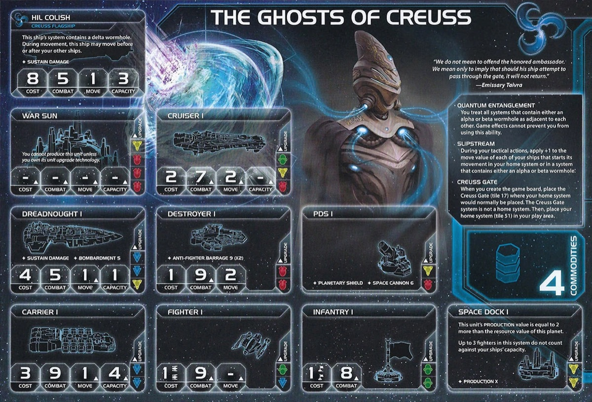

Ghosts of Creuss owns the map. Every wormhole is adjacent to every other wormhole—for you only. Extra movement from wormholes, starting with blue tech, and the ability to place new wormhole tokens. While others crawl across the galaxy, you’re already there.
Your home system isn’t technically a home system, which matters for rules interactions. You build a personal highway network across the galaxy that only you can fully exploit.
Playing Creuss means the map works differently for you than everyone else. Systems that are far apart for opponents are one jump away for you. You don’t fight for position—you simply appear where you need to be.
Your game is about building and exploiting your wormhole network. Place tokens, control wormhole systems, and create adjacencies that let you threaten multiple angles at once. Opponents can’t pin you down because you’re never truly committed to one area.
You’re not a combat faction. Your ships are standard, your units unremarkable. But you don’t need to win fights when you can choose which fights happen and where. Score objectives others can’t reach, take Mecatol when it’s undefended, and use your hero to rearrange the entire board when victory is on the line.
Home System:
Creuss Gate: Placed where your home system would normally go. Contains a frontier token. Not a home system.
Commodities: 4
Notes: Decent resources, weak influence. 4 commodities makes you a semi-rich faction. One planet home system that’s one extra move away is extremely safe—almost impossible to invade.
Weak fleet with only 1 carrier. Even with solid movement, you need Sling Relay or Warfare secondary to solve the 1 capacity ship problem.
Quantum Entanglement (Faction Ability): You treat all systems that contain either an alpha or a beta wormhole as adjacent to each other. Game effects cannot prevent you from using this ability.
All alpha and beta wormholes are adjacent to each other—for you only. Cannot be blocked by any game effect. Wormhole nexus counts as both alpha and beta.
Slipstream (Faction Ability): During your tactical actions, apply +1 to the move value of each of your ships that starts its movement in your home system or in a system that contains either an alpha or beta wormhole.
+1 movement from wormholes and home system. Stacks with Gravity Drive. Stage fleets at wormhole systems to maximize. Works with alpha/beta only—not delta or gamma.
Creuss Gate (Faction Ability): When you create the game board, place the Creuss Gate where your home system would normally be placed. The Creuss Gate system is not a home system. Then place your home system in your play area.
Starting Technologies:
Gravity Drive (B): After you activate a system, apply +1 to the move value of 1 of your ships during this tactical action.
Notes: By far the best starting tech in the game. Combined with Slipstream (+1 from wormholes), your carriers move 3 from wormhole systems.
Faction Technologies:
Wormhole Generator Ω (BB): ACTION: Exhaust this card to place or move a Creuss wormhole token into either a system that contains a planet you control or a non-home system that does not contain another player’s ships.
Very solid faction tech with increased value from Particle Synthesis breakthrough. On-demand wormhole placement for scoring, surprise attacks, or production. But it’s still a valid strategy to skip this and ask people to place wormholes for you with your promissory note.
Dimensional Splicer (R): At the start of a space combat in a system that contains a wormhole and 1 or more of your ships, you may produce 1 hit and assign it to 1 of your opponent’s ships.
Hard to get because it’s red, but nice to have. Free pre-combat hit at wormholes makes opponents think twice before attacking you on your turf.
Agent - Emissary Taivra: After a player activates a system that contains a non-delta wormhole: You may exhaust this card; if you do, that system is adjacent to all other systems that contain a wormhole during this tactical action.
Most common use: grab Mallice round 1 by going straight from your home system to the wormhole nexus for those bonus TGs. Also a powerful trading tool—sell extended reach to other players, or use it yourself for surprise positioning.
Commander - Sai Seravus: Unlock: Have units in 3 systems that contain alpha or beta wormholes.
After your ships move: For each ship that has a capacity value and moved through 1 or more wormholes, you may place 1 fighter from your reinforcements with that ship if you have unused capacity in the active system.
Great commander since you love moving through wormholes anyway. Lessens strain on your production capacity and can surprise people—your army looks weaker on the board than it actually is.
Hero - Riftwalker Meian: Unlock: Have 3 scored objectives. Singularity Reactor - ACTION: Swap the positions of any 2 systems that contain wormholes or your units, other than the Creuss system and the wormhole nexus. Then, purge this card.
Game-breaking one-time ability. Swap Mecatol adjacent to your slice, steal an opponent’s valuable system, or deny critical scoring positions. Best used Round 5-6 when objectives are clear. All units in swapped systems stay with the tile.
At the start of your turn during the action phase: Place or move a Creuss wormhole token into either a system that contains a planet you control or a non-home system that does not contain another player’s ships. Then, return this card to the Creuss player.
Ask people to add a few bonus wormholes here and there to synergize with your breakthrough and open options. Very helpful as a winslaying tool. Returns after use so you can trade it repeatedly—make sure it doesn’t get stuck with someone.
Your Alliance gives your ally your commander—free fighters when moving through wormholes. Solid for factions that want sustainable fighter generation without production investment.
Cost: 2 | Combat: 6 | Sustain Damage
After any player activates a system, you may remove this unit from the game board to place or move a Creuss wormhole token into this system.
Most commonly used to block someone from using a wormhole. Reactive wormhole placement on any player’s activation—sacrifice the mech to disrupt opponent plans or enable your own follow-ups.
Cost: 8 | Combat: 5 | Move: 1 | Capacity: 3 | Sustain Damage
This ship’s system contains a delta wormhole. During movement, this ship may move before or after your other ships.
Mobile delta wormhole that moves with the ship. Can move before OR after your other ships, creating adjacencies mid-action. Not a combat powerhouse but the utility is unique. Combined with Wormhole Generator and mech tokens, you can have multiple placeable wormholes.
Each wormhole in a system that contains your ships gains PRODUCTION 1 as if it were a unit you control. Reduce the combined cost of units you produce in systems that contain wormholes by 1 for each wormhole in that system.
Turns your wormhole network into production hubs—no space dock required. Helps round 1: go to wormhole nexus and pay 1 TG for a dread to secure that location. Active nexus has 3 wormholes (alpha, beta, gamma) so it gets PRODUCTION 3 and -3 cost. Also makes Mallice a possible production hub with a space dock. Scales with board control.
B↔︎Y Synergy: Unlocks Dread II. Otherwise not too helpful except for tech objectives (4 blue, 2 in 2 colors). No need for IE with your wormhole production.
Speaker Order:
Slice Priorities:
Avoid:
Notes:
Round 1 Priority Rankings:
Breakthrough - Need it before going to Mallice so you can produce there.
Technology - Priority for Sling Relay.
Expansion + Production - Build carrier with Sling Relay.
Scoring - If you can.
Expansion Notes: Unlock breakthrough, go to Mallice with agent, get tech, build carrier at home and grab another system.
Your power scales with wormhole availability. Low-wormhole maps mean lower mobility and less access to opponents and objectives. Commander unlock requires units in 3 wormhole systems, and your breakthrough needs wormholes to produce at.
You start with Gravity Drive (Blue). Your tech path is very flexible—go full blue + unit upgrades. No strict order required after Sling Relay. Adapt to what you need each round.
Starting Tech: Gravity Drive
Round 1: Sling Relay (B) - ACTION: Exhaust to produce 1 ship in any system that contains 1 of your space docks. - Why: Enables breakthrough production. Critical for your R1 Mallice strategy—build a carrier at home while your fleet is elsewhere.
Round 2: Dark Energy Tap / Wormhole Generator / Fleet Logistics - Dark Energy Tap: Explore frontier tokens when you activate systems with ships. Ships can retreat anywhere without needing units there. - Wormhole Generator Ω (BB): Place or move Creuss wormhole tokens. On-demand wormhole placement for scoring, attacks, or production. - Fleet Logistics (BB): Perform 2 actions per turn. Late game scoring options. - Why: All solid options. DET for exploration value, WG for wormhole control, Fleet Log for late game scoring.
Round 3-5: Flex techs - Fleet Logistics (BB) - If not taken R2. Late game scoring options. - Wormhole Generator Ω (BB) - If not taken R2. Core faction tech for wormhole placement. - Light/Wave Deflector (BBB) - Ships can move through enemy ships. Great for bypassing blockers. - Carrier II (BB) - Move 2, Capacity 6. More capacity + commander fighter generation. - Dreadnought II (BBY) - Move 2, Sustain, Bombardment 5. Your B↔︎Y synergy makes this easy to unlock.
Round 1 Priority Ranking: You need to unlock your breakthrough.
Trade - Good way to make early allies. Strong economy for breakthrough.
Leadership - Drop secret for breakthrough.
Politics - Drop cards for breakthrough.
Diplomacy - Ready tech skip planet if possible.
Technology - Get Sling Relay.
Construction - Second space dock helps production.
Warfare - Helps build at home and go out with all movement to take slice, but usually not enough resources to make it worth it.
Imperial - Never R1.
Strategy Token Priority: Warfare, Technology, and Diplomacy secondaries are your priority follows.
Love:
Good:
Situational:
Fleet Focus: Carrier-heavy fleet to maximize commander fighter generation. Your fighters are essentially free—lean into that economy. Flagship for wormhole utility, not as a combat ship.
Early Game (Rounds 1-2):
Unlock breakthrough R1—this is your priority. Get Sling Relay, go to Mallice with agent for bonus TGs, build carrier at home. Expand to wormhole systems to unlock commander. Use your PN to get others placing wormholes for you.
Mid Game (Rounds 3-4):
Build your wormhole network with tech, PN, and mech. Potentially make a play for Fracture with solid movement, or Mecatol if the option is presented. Can be hard to hold Mecatol and Mallice—vulnerable if you do so.
Late Game (Round 5+):
Use hero to swap systems for critical scoring or denial. Convert mobility into points—score objectives others can’t reach. Help set up people for win slays and objective denial. Make surprising movement plays people won’t expect. Setup a wormhole in Fracture if possible for a Styx play.
Strengths: Spendies (Mallice feeds your economy), Ships in Systems (you’re already there), and Tech (blue path flows naturally).
Weaknesses: Structure (ghosts don’t build). Control is mixed—reach makes some trivial, but planet traits are out of your hands.
| Stage I Objective | Status |
|---|---|
| Spendies | |
| Erect a Monument (Spend 8 resources) | 🟢 |
| Sway the Council (Spend 8 influence) | 🟢 |
| Negotiate Trade Routes (Spend 5 trade goods) | 🟢 |
| Lead from the Front (Spend 3 tokens from tactic/strategy pools) | 🟢 |
| Amass Wealth (Spend 3 influence, 3 resources, 3 trade goods) | 🟢 |
| Control | |
| Expand Borders (Control 6 planets in non-home systems) | 🟢 |
| Corner the Market (Control 4 planets with same trait) | 🟡 |
| Found Research Outposts (Control 3 planets with tech specialties) | 🔴 |
| Discover Lost Outposts (Control 2 planets with attachments) | 🔴 |
| Push Boundaries (Control more planets than each neighbor) | 🟢 |
| Ships in Systems | |
| Intimidate the Council (Ships in 2 systems adjacent to MR) | 🟢 |
| Explore Deep Space (Units in 3 systems without planets) | 🟢 |
| Make History (Units in 2 systems with legendary/MR/anomalies) | 🟢 |
| Populate the Outer Rim (Units in 3 edge systems) | 🟢 |
| Raise a Fleet (5+ non-fighter ships in 1 system) | 🟢 |
| Engineer a Marvel (Have flagship or war sun on board) | 🟢 |
| Tech | |
| Diversify Research (Own 2 tech in each of 2 colors) | 🟢 |
| Develop Weaponry (Own 2 unit upgrade technologies) | 🟢 |
| Structure | |
| Build Defenses (Have 4 or more structures) | 🔴 |
| Improve Infrastructure (Structures on 3 planets outside HS) | 🔴 |
Legend: 🟢 Likely | 🟡 Possible | 🔴 Difficult
| Secret Objective | Status |
|---|---|
| Combat | |
| Unveil Flagship (Win space combat with flagship) | 🟢 |
| Destroy their Greatest Ship (Destroy war sun/flagship) | 🟡 |
| Spark a Rebellion (Win combat vs VP leader) | 🟢 |
| Betray a Friend (Win combat vs player whose PN you have) | 🟢 |
| Brave the Void (Win combat in anomaly) | 🟢 |
| Darken the Skies (Win combat in another player’s HS) | 🔴 |
| Demonstrate your Power (3+ non-fighter ships after space combat) | 🟢 |
| Turn their Fleets to Dust (SPACE CANNON destroy last ship) | 🔴 |
| Make an Example (BOMBARDMENT destroy last ground forces) | 🟢 |
| Fight With Precision (AFB destroy last fighter) | 🟢 |
| Ships in Systems | |
| Threaten Enemies (Ships adjacent to another player’s HS) | 🟢 |
| Cut Supply Lines (Ships in system with enemy space dock) | 🟢 |
| Defy Space and Time (Units in wormhole nexus) | 🟢 |
| Become the Gatekeeper (Ships in alpha and beta wormhole systems) | 🟢 |
| Learn Secrets of the Cosmos (Ships in 3 systems adjacent to anomalies) | 🟢 |
| Control the Region (Ships in 6 systems) | 🟢 |
| Occupy the Seat of the Empire (Control MR with 3+ ships) | 🟢 |
| Control | |
| Monopolize Production (Control 4 industrial planets) | 🔴 |
| Mine Rare Minerals (Control 4 hazardous planets) | 🔴 |
| Forge an Alliance (Control 4 cultural planets) | 🔴 |
| Establish Hegemony (Control planets with 12+ influence) | 🟢 |
| Hoard Raw Materials (Control planets with 12+ resources) | 🟢 |
| Seize an Icon (Control legendary planet) | 🟢 |
| Stake Your Claim (Control planet in contested system) | 🔴 |
| Become a Martyr (Lose control of planet in home system) | 🔴 |
| Tech | |
| Adapt New Strategies (Own 2 faction technologies) | 🔴 |
| Master the Laws of Physics (Own 4 tech of same color) | 🟢 |
| Structure/Units | |
| Establish a Perimeter (Have 4 PDS on board) | 🔴 |
| Fuel the War Machine (Have 3 space docks) | 🟢 |
| Gather a Mighty Fleet (Have 5 dreadnoughts) | 🟡 |
| Mechanize the Military (1 mech on each of 4 planets) | 🟡 |
| Occupy the Fringe (9+ ground forces on planet without space dock) | 🟡 |
| Produce en Masse (Units with PRODUCTION 8+ in single system) | 🟢 |
| Other | |
| Dictate Policy (3+ laws in play) | 🔴 |
| Drive the Debate (You/your planet elected by agenda) | 🔴 |
| Destroy Heretical Works (Purge 2 relic fragments) | 🔴 |
| Form a Spy Network (Discard 5 action cards) | 🟡 |
| Foster Cohesion (Be neighbors with all players) | 🟢 |
| Strengthen Bonds (Have another player’s PN) | 🟢 |
| Prove Endurance (Last to pass) | 🟡 |
| Stage II Objective | Status |
|---|---|
| Spendies | |
| Centralize Galactic Trade (Spend 10 trade goods) | 🟢 |
| Found a Golden Age (Spend 16 resources) | 🟢 |
| Galvanize the People (Spend 6 tokens from tactic/strategy pools) | 🟢 |
| Manipulate Galactic Law (Spend 16 influence) | 🟢 |
| Hold Vast Reserves (Spend 6 influence, 6 resources, 6 trade goods) | 🟢 |
| Control | |
| Conquer the Weak (Control 1 planet in another player’s HS) | 🔴 |
| Rule Distant Lands (Control 2 planets in/adjacent to different players’ HS) | 🟡 |
| Subdue the Galaxy (Control 11 planets in non-home systems) | 🔴 |
| Unify the Colonies (Control 6 planets with same trait) | 🔴 |
| Reclaim Ancient Monuments (Control 3 planets with attachments) | 🔴 |
| Form Galactic Brain Trust (Control 5 planets with tech specialties) | 🔴 |
| Ships in Systems | |
| Command an Armada (Have 8+ non-fighter ships in 1 system) | 🟢 |
| Achieve Supremacy (Flagship/War Sun in another player’s HS or MR) | 🟢 |
| Become a Legend (Units in 4 systems with legendary/MR/anomalies) | 🟡 |
| Patrol Vast Territories (Units in 5 systems without planets) | 🟡 |
| Control the Borderlands (Units in 5 edge systems not HS) | 🟡 |
| Tech | |
| Master of Sciences (Own 2 techs in each of 4 colors) | 🔴 |
| Revolutionize Warfare (Own 3 unit upgrade technologies) | 🟢 |
| Structure | |
| Construct Massive Cities (Have 7+ structures) | 🔴 |
| Protect the Border (Structures on 5 planets outside HS) | 🔴 |
Legend: 🟢 Likely | 🟡 Possible | 🔴 Difficult
Top Tier:
Good Tier:
This section highlights action cards that synergize particularly well with your faction’s strengths or mitigate your weaknesses, relics that offer exceptional value for your faction’s strategy and abilities, and agendas to pursue that benefit your position, and agendas to watch out for that could hurt you.
Ghosts of Creuss is the faction for players who want to rewrite the rules of movement. While others crawl across the galaxy system by system, you fold space itself. Every wormhole is your doorway, and by mid-game, the entire map is one jump away.
Your biggest strength is positional omnipresence. That back-line space dock? Adjacent. Their home system? One move. Mecatol Rex? Always reachable. You don’t fight for position—you simply appear where you need to be. Opponents can’t hide because distance doesn’t exist for you.
The Ghosts experience is uniquely satisfying. You’re not the strongest fleet at the table, but you’re always in position. While others commit forces to one front, you threaten three. Your hero can literally rearrange the galaxy when victory is on the line. Your wormhole network becomes a production empire with Particle Synthesis—no space docks required.
When you master Ghosts, you feel untouchable. Opponents can’t pin you down because you’re never truly committed. They can’t defend everywhere, but you can attack anywhere. The galaxy bends to your will.
Distance is an illusion.